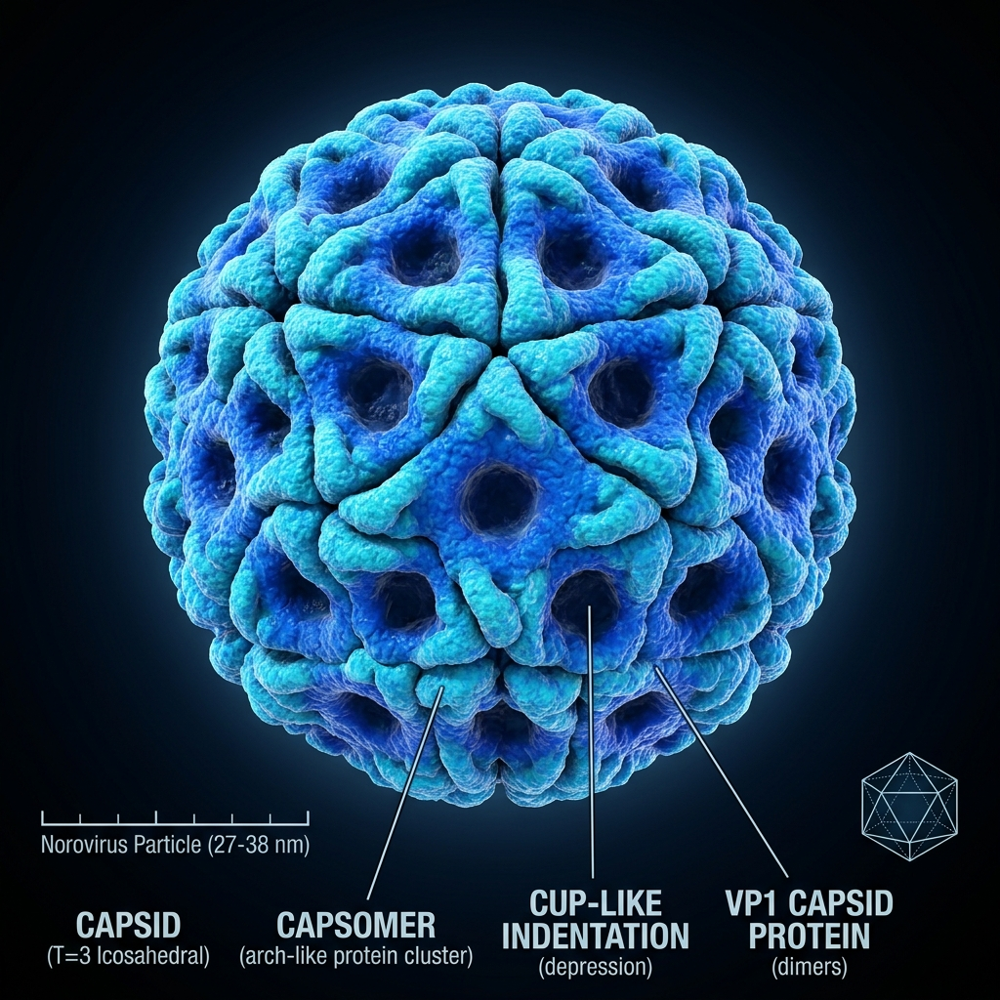
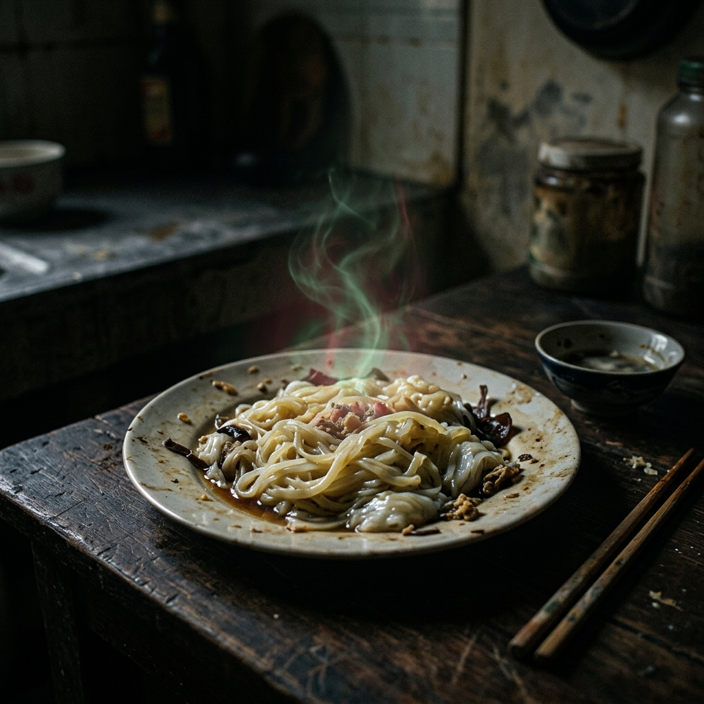
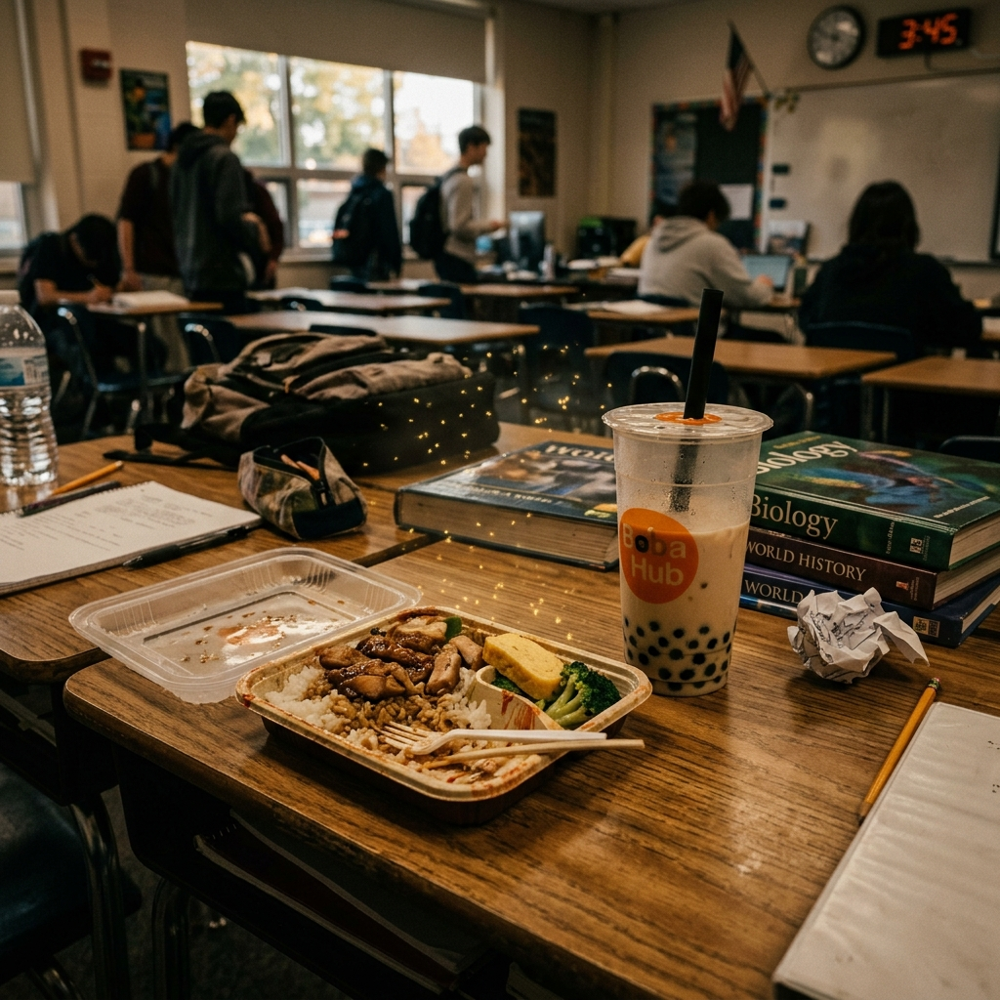
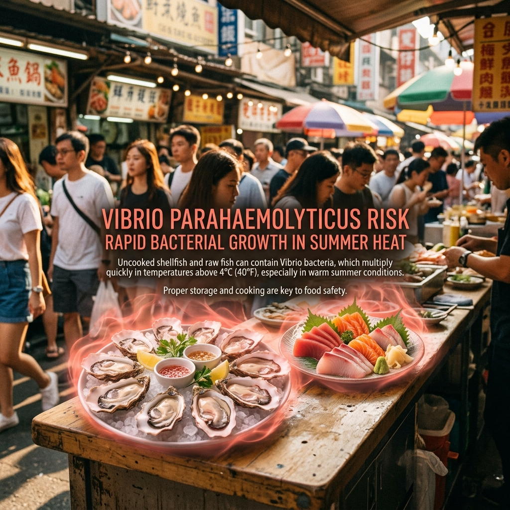
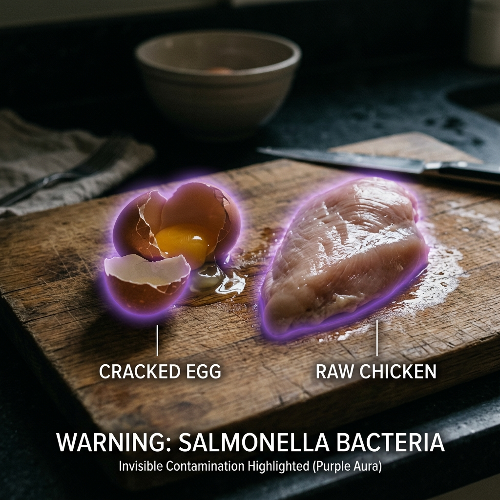
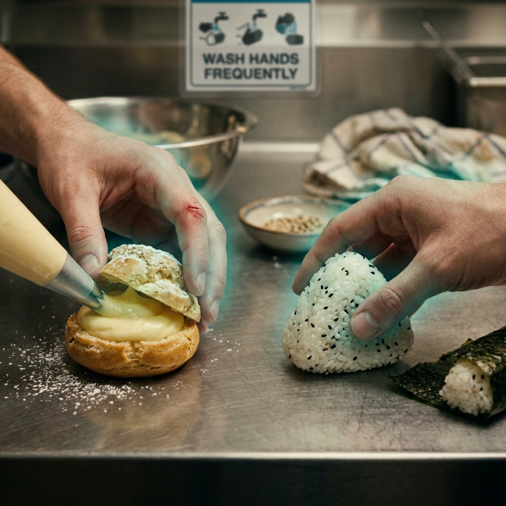
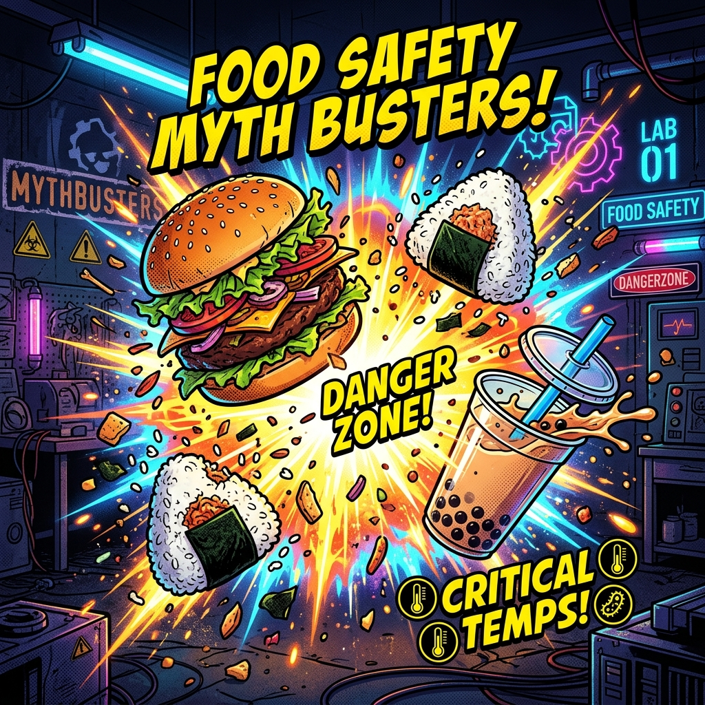

⚠️ 2026 食安警報啟動中 | Food Safety Alert Active
國中生外食求生指南 · The Survival Guide to Eating Out
2026 年 4 月，北部某國中畢業旅行，因便當在車上悶了兩小時， 41 名同學集體上吐下瀉送醫——兇手：仙人掌桿菌。
同月，台南夜市春捲攤爆發沙門氏菌群聚感染， 14 人確診，起因是生熟食共用同一把夾子。
食物中毒不是電視新聞才有的事，它就發生在你去的地方。 It's not just on TV. It's at your lunch spot.
▼ 往下滑，學會保護自己
Section 02 — Know Your Enemy
食物中毒的真正幕後黑手長什麼樣？認識牠們，才能對抗牠們。

病毒
毒素
細菌
細菌
細菌
細菌／毒素Section 03 — Interactive
真實場景，兩個選擇，只有一個不會讓你待在廁所裡。點下去，看結果。
補完數學已經晚上八點半。你衝去樓下便當店，兩間店並排。 左邊那間：砧板上有生雞肉血水，老闆娘用夾生肉的夾子直接夾白飯。 右邊那間：砧板分區，夾子掛在架上分類放。 兩間都有熱燈照著，同樣的價格，但你只能選一間。
生雞肉含有沙門氏菌與彎曲桿菌（Campylobacter）。 用同一支夾子夾生肉再夾熟食，叫做「交叉污染 (cross-contamination)」， 是台灣外食中毒頭號原因之一。
熱燈只是保溫，不是殺菌。你吃進去的不只是雞腿飯，還有上千萬隻細菌的大餐。
觀察到砧板分區（生熟食分開）和夾具分類， 是判斷店家衛生習慣的兩個關鍵秒殺指標。
好的習慣不需要認證——就是這些小細節。多走那幾步路，物超所值。
週五晚上，你和同學逛夜市。一杯芒果雪花冰排隊等你，超誘人。 但你掃了一眼攤位：盛冰的容器和備料都是開放式的，沒有加蓋。 隔壁的珍珠奶茶攤把冰塊桶直接放在地上，桶蓋半開。 你的同學已經掏出皮夾了。
夜市環境飛蟲多、灰塵大，開放式冰品是微生物的天堂。 冰塊一旦受糞口途徑污染（E. coli、諾羅病毒），整批都是地雷。
排隊人多 = 很多人也在冒這個險。食物中毒潛伏期長達 24–72 小時，今天沒事不代表明天不倒。
冰品的三個危險訊號：① 容器開蓋暴露、② 冰塊桶置地、③ 配料未加蓋冷藏。
密封罐裝飲料是夜市最安全的選項。不用放棄夜市，只要更會選。
午餐時間，你打開今天的便當盒，飯有一點點奇怪的味道—— 不是明顯的臭，就是「有點怪」。旁邊同學說「沒差啦，我吃了都沒事」， 班長說「你想太多」，大家都在吃。你有點餓，下午還有體育課。
「聞起來有點怪」是你的嗅覺警報系統在運作，不要無視它。告訴老師不是「麻煩人」，是防止群聚中毒的關鍵動作。
2026 年畢旅事件中，有幾個同學回報「感覺怪怪的」，但不好意思開口，繼續吃才釀成大規模送醫。開口，才是真的勇敢。
「別人吃了沒事」是食安最危險的邏輯之一。每個人的個人攝入量、免疫力、腸道菌群都不同；而且症狀有潛伏期，「現在沒事」只代表「還沒發作」。
食物異味是微生物代謝廢物的訊號。你的鼻子告訴你了，但你沒聽。
Section 04 — Myth vs. Reality
這些「常識」流傳很廣，但它們是謊言。點開每一條，看真相。

熱確實可以殺死細菌本身，但部分毒素（toxin）是耐熱的——加熱後毒素仍然存在，照樣讓你中毒。
細菌轉移到食物所需的時間是 毫秒級（milliseconds），不是秒。「3 秒法則」在科學上根本不存在。
「看起來正常、聞起來正常 ≠ 吃了安全。」 食物中毒最危險的細菌，許多是無色無味無臭的隱形刺客。
Section 05 — Your Cheat Sheet
記不住那麼多？沒關係。把這 5 條記起來，你的食安等級直接跳到 LV.5。
本頁面內容對應國中「健康與體育」領域核心素養： 健體-J-A2（系統思考與問題解決）、 健體-J-C1（道德實踐與公民意識）。 學習正確的食安知識，是保護自己也保護周遭的人的實踐。
Section 06 — Visual Challenge
三個真實場景，每個場景有 4 個食安問題藏在裡面。 你能靠著上面學到的知識，把它們全部找出來嗎？
Section 07 — Final Challenge
讀完了嗎？現在來證明它。10 題、3 條命、每題 15 秒。所有題目都來自上面的內容。
10 道題，全部來自上方的指南內容。
3 條命，每題 15 秒限時，答完查看你的食安等級。
📖 建議先讀完上方內容再來挑戰（已讀 0/4 節）